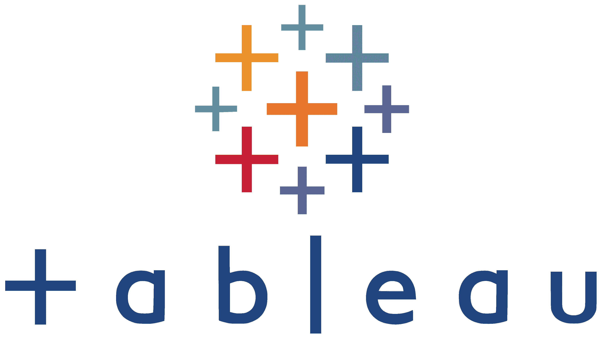

S O B R E M Í
La historia detrás de los datos
Soy un profesional de datos establecido en Toluca, Estado de México, México, con más de una década de experiencia convirtiendo información compleja en decisiones estratégicas claras.
Con formación en Actuaría y un MBA, conecto la brecha entre modelos analíticos avanzados y las necesidades comerciales del día a día, haciendo que los datos sean fáciles de entender.
Cuando no estoy analizando bases de datos, probablemente me encuentres disfrutando de un buen partido de fútbol ⚽ o relajándome con un buen libro 📖.
E X P E R I E N C I A
Director de Business Intelligence
Primewireless
SEP 2024 - DIC 2025
- Desarrollé modelos predictivos en Python y R, impulsando el crecimiento interanual de renovaciones en un 36% y optimizando el cruce de ventas.
- Automaticé complejos modelos de compensación variable mediante SQL, reduciendo errores en un 40% a nivel nacional.
- Rediseñé la asignación de inventario utilizando análisis predictivo, reduciendo exitosamente el exceso de stock en un 28%.
Gerente Senior de Business Intelligence
Primewireless
NOV 2020 - AGO 2024
- Centralicé los datos de ventas nacionales provenientes de múltiples fuentes para agilizar la toma de decisiones basada en datos.
- Automaticé flujos de trabajo de reportes analíticos, reduciendo el tiempo de preparación mensual en un 55%.
- Rediseñé las estructuras de cuotas comerciales mediante el análisis de datos, impulsando la productividad de ventas en un 20%.
Gerente Senior de BI
AT&T Digital Communications
AGO 2018 - JUL 2020
- Estandaricé las políticas de gobierno de datos conectando bases de datos comerciales, operativas y financieras.
- Lideré iniciativas analíticas para extraer conocimientos procesables alineados con la estrategia go-to-market.
- Consolidé arquitecturas de datos multi-fuente para asegurar un análisis de negocio ágil y preciso.
H A B I L I D A D E S
Análisis de Datos Central
Base técnica para flujos de datos y consultas analíticas.
Modelado Predictivo
Descubriendo patrones ocultos mediante algoritmos estadísticos.
- Aprendizaje Automático
- Clasificación
- Agrupamiento
- Regresión
Análisis Visual
Narrativa de datos y tableros métricos.

Estrategia de Negocio
Pronósticos y Optimización de Cuotas.
P R O Y E C T O S
Proyecto 1: Análisis de Datos Inmobiliarios
Mi tema de análisis exploratorio fue la 'Predicción de precios de viviendas utilizando el dataset de Ames, Iowa'. Es decir, esto implicó el uso de aprendizaje automático y modelos de regresión para determinar tasaciones. El objetivo de este campo de investigación es cerrar la brecha entre los datos sin procesar y el conocimiento práctico del sector inmobiliario.